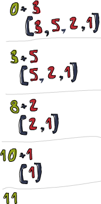

Функції вищих порядків
 Функції Haskell можуть приймати функції як параметри, та повертати функції як значення повернення. Функція, що робить щось з цього, називається функцією вищого порядку. Функції вищого порядку є не тільки частиною досвіду Haskell, вони в великій мірі є сам досвід Haskell. З'ясовується, що якщо ви бажаєте визначити обчислення, визначаючи що це таке, замість визначати кроки, що змінюють деякий стан та можливо роблячи цикли, функції вищих порядків незамінні. Вони дійсно є потужним способом вирішення проблем і думати про программи.
Функції Haskell можуть приймати функції як параметри, та повертати функції як значення повернення. Функція, що робить щось з цього, називається функцією вищого порядку. Функції вищого порядку є не тільки частиною досвіду Haskell, вони в великій мірі є сам досвід Haskell. З'ясовується, що якщо ви бажаєте визначити обчислення, визначаючи що це таке, замість визначати кроки, що змінюють деякий стан та можливо роблячи цикли, функції вищих порядків незамінні. Вони дійсно є потужним способом вирішення проблем і думати про программи.
Каровані функції
Кожна функція в Haskell офіційно приймає тільки один параметр. Так як це можливо, що ми визначили декілька функцій, що приймають більше ніж один параметр? Гаразд, це дотепний трюк! Всі функції, що приймають декілька параметрів, були карованими функціями. Що це означає? Ви краще зрозумієте це на прикладі. Давайте візьмемо нашого гарного друга, функцію max. Виглядає, що вона приймає два параметри, та повертає той, що більше. Виконання max 4 5 спочатку створює функцію, що приймає параметр, і повертає або 4, або цей параметр, в залежності що більше. Потім 5 застосовується до цієї функції, і ця функція продукує наш бажаний результат. Це виглядає як балачка, але насправді це крута концепція. Наступні два виклики еквівалентні:
ghci> max 4 5
5
ghci> (max 4) 5
5
 Покладання проміжка між двома речами є просто застосування функції. Проміжок є різновидом оператора, і він має найвищий преоритет. Давайте перевіримо тип
Покладання проміжка між двома речами є просто застосування функції. Проміжок є різновидом оператора, і він має найвищий преоритет. Давайте перевіримо тип max. Це max ::( Ord a) => a -> a -> a. Він може бути записаний як max ::( Ord a) => a -> (a -> a). Це може бути прочитане так: max бере a, та повертає (це ->) функцію, що бере a та повертає a. Ось чому тип повернення та параметри функцій просто розділені стрілками.
Погляньте на цю образливо просту функцію:
multThree :: (Num a) => a -> a -> a -> a
multThree x y z = x * y * z
То як це вигідно для нас? Кажучи просто, якщо ми викликаємо функцію з недостатньою кількістю параметрів, ми отримаємо назад частково застосовану функцію, що приймає стільки параметрів, скльки ми залишили. Використання часткового застосування (виклик функцій з недостатньою кількістю параметрів, якщо бажаєте), є милий спосіб створювати функції на льоту, так що ми можемо передавати їх до інших функцій, або наповнювати їх деякими даними.
Що насправді відбувається, коли ми робимо multThree 3 5 9 або ( (multThree 3) 5) 9? Спочатку 3 застосовується до multThree, оскільки вони розділені проміжком. Це створює функцію, що приймає один параметр, та повертає функцію. Так що 5 застосовується до цього, це створює функцію, що буде брати параметр, та множити його на 15. 9 застосовується до цієї функції, та результат буде 135, або десь так. Пам'ятайте, що цей тип функції може бути переписаний як multThree ::( Num a) => a -> (a -> (a -> a)). Річ перед -> є параметр, що приймає функція, і річ, що йде після цього є те, що вона повертає. Так що наша функція приймає a, та повертає функцію типу (Num a) => a -> (a -> a). Подібно до цього, ця функція бере a, та повертає функцію типу (Num a) => a -> a. І ця функція, нарешті, просто бере a і повертає a. Погляньте на це:
ghci> let multTwoWithNine = multThree 9
ghci> multTwoWithNine 2 3
54
ghci> let multWithEighteen = multTwoWithNine 2
ghci> multWithEighteen 10
180
Викликаючи функції з недостатніми параметрами, так би мовити, ми створюємо функції на льоту. Що, якщо ми бажаємо створити функцію, що приймає число, та порівнюєте його зі 100? Ми можемо зробити щось подібне до наступного:
compareWithHundred :: (Num a, Ord a) => a -> Ordering
compareWithHundred x = compare 100 x
Якщо ми викличемо її з 99, вона поверне GT. Прості речі. Зауважте, що x зправа по обі сторони від рівності. Тепер давайте подумаємо щодо того, що повертає compare 100. Воно повертає функцію, що бере число, та порівнює його з 100. Вау! Чи це не функція, яку ми бажали? Ми можемо переписати це так:
compareWithHundred :: (Num a, Ord a) => a -> Ordering
compareWithHundred = compare 100
Декларація типу каже те саме, оскільки compare 100 повертає функцію. Compare має тип (Ord a) => a -> (a -> Ordering), та виклик її з 100 повертає (Num a, Ord a) => a -> Ordering. Додаткове обмеження класу присутнє, оскільки 100 також є частиною типокласу Num.
Йо! Переконайтесь, що ви справді розумієте, як роблять каровані функції та робить часткове застосування, бо воні справді важливі!
Інфіксні функції також можуть бути частково застосовані з використанням секцій. Для секції інфіксної функції просто оточите її дужками, і надайте параметр тільки з однієї сторони. Це створить функцію, що приймає один параметр, та потім застосовує його до сторони, де відсутній операнд. Образливо тривіальна функція:
divideByTen :: (Floating a) => a -> a
divideByTen = (/10)
Виклик, скажімо, divideByTen 200 еквівалентне до 200 / 10, так само, як зробити (/10) 200. Функція, що перевіряє, що наданий символ є великою літерою:
isUpperAlphanum :: Char -> Bool
isUpperAlphanum = (`elem` ['A'..'Z'])
Єдина особлива річ щодо секцій є використання -. З визначення секцій (-4) має давати результат в вигляді функції, що приймає число, та віднімає 4 з нього. Однак для зручності (-4) означає мінус чотири. Так що якщо ви бажаєте створити функцію, що віднімає 4 від часла як параметра, частково застосуйте функцію subtract таким чином: (subtract 4).
Що трапиться, якщо ми спробуємо просто зробити multThree 3 4 в GHCI, замість прикріплення її до імені за допомогою let, або передачі її до іншої функції?
ghci> multThree 3 4
<interactive>:1:0:
No instance for (Show (t -> t))
arising from a use of `print' at <interactive>:1:0-12
Possible fix: add an instance declaration for (Show (t -> t))
In the expression: print it
In a 'do' expression: print it
GHCI каже нам, що вираз спродукував функцію типу a -> a, але воно не знає, як друкувати її на екрані. Функції не є членами типокласу Show, так що ви не можете отримати милого рядкового представлення функції. Коли ми робимо, скажімо, 1 + 1 в підказці GHCI, воно спочатку ообчислює 2, та потім викликає show на 2 для отримання текстуального представлення числа. І текстуальна репрезентація 2 є просто рядок "2", що друкується на екрані.
Деякий високо-порядкізм по порядку
Функції можуть приймати функції як параметри і також повертають функції. Щоб проілюстровати це, ми збираємось створити функцію, що приймає функцію, та потім застосовує її двічі до будь-чого!
applyTwice :: (a -> a) -> a -> a
applyTwice f x = f (f x)
 Для початку зауважте декларацію типу. Перед цім ми не потребували дужок, оскільки
Для початку зауважте декларацію типу. Перед цім ми не потребували дужок, оскільки -> є право асоціативним. Але тут воно обов'язкове. Це каже, що перший параметр є функція, що приймає дещо, та повертає ту саму річ. Другий параметр є дещо, і цього ж типу також значення повернення. Ми можемо читати цю декларацію типу, але щоб не заморочуватись ми просто скажемо, що ця функція приймає два параметри, та повертає одну річ. Перший параметр є функція (типу a -> a) та другий те саме a. Функція також може бути Int -> Int або String -> String, або будь-що. Але потім другий параметр має також бути того самого типу.
Note: Відтепер ми будемо казати, що функції приймають декілька параметрів, незважаючи на те, що кожна функція насправді бере тільки один параметр, та повертає частково застосовані функції, доки ми не досягнемо функцію, що повертає справжнє значення. Так що для спрощення ми кажемо, що a -> a -> a бере два параметри, навіть маючи на увазі, що це відбувається за лаштунками.
Тіло функції досить просте. Ми просто використовуємо параметр f як функцію, застосовуючи x до неї, розділяючи їх проміжками, і потім застосовуючи результат знову до f. В любому випадку пограємось з функцією:
ghci> applyTwice (+3) 10
16
ghci> applyTwice (++ " HAHA") "HEY"
"HEY HAHA HAHA"
ghci> applyTwice ("HAHA " ++) "HEY"
"HAHA HAHA HEY"
ghci> applyTwice (multThree 2 2) 9
144
ghci> applyTwice (3:) [1]
[3,3,1]
Дивовижність та корисність часткових функцій є очевидною. Якщо наша функція потребує передати їй функцію, що приймає тільки один параметр, ви можете тільки частково застосувати функцію до тієї точки, коли вона прийматиме тільки один параметр, та потім передати її.
Тепер ми збираємось використати програмування вищого порядку для реалізації насправді корисної функції, що є в стандартній бібліотеці. Вона називається zipWith. Вона бере функцію та два списки як параметри, та потім поєднує два списки, застосовуючи функцію між відповідними елементами. Ось як ми реалізуємо її:
zipWith' :: (a -> b -> c) -> [a] -> [b] -> [c]
zipWith' _ [] _ = []
zipWith' _ _ [] = []
zipWith' f (x:xs) (y:ys) = f x y : zipWith' f xs ys
Подивимось на декларацію типу. Перший параметр є функція, що бере дві речі і повертає третю річ. Вони не мають бути того самого типу, але вони можуть. Другий та третій параметр є списками. Результат також список. Перший має бути списком з a, оскікльки функція поєднання бере a як перший аргумент. Другий має бути списком b, тому що другий параметр функції поєднання має тип b. Результатом є список c. Якщо декларація типу функції каже, що вона сприймає функцію a -> b -> c як параметр, вона також сприйматиме функцію a -> a -> a, але не навпаки! Пам'ятайте, що коли в створюєте функції, особливо вищого порядку, і ви не впевнені щодо типу, ви можете просто оминути декларацію типу, та потім перевірити, що Haskell виводить щодо типу через :t.
Дія в функції досить подібна до звичайного zip. Граничні умови ті самі, тільки є додатковий аргумент, функція поєднання, але цей аргумент не має значення в граничних умовах, так що ми використовуємо _ щодо цього. Та тіло функції останнього шаблону подібне до zip, але він не робить (x,y), але f x y. Єдина функція вищого порядку може бути використана для безлічі різних завдань, якщо вона досить загальна. Ось маленька демонстрація всьго різноманіття речей, що може робити наша функція zipWith':
ghci> zipWith' (+) [4,2,5,6] [2,6,2,3]
[6,8,7,9]
ghci> zipWith' max [6,3,2,1] [7,3,1,5]
[7,3,2,5]
ghci> zipWith' (++) ["foo ", "bar ", "baz "] ["fighters", "hoppers", "aldrin"]
["foo fighters","bar hoppers","baz aldrin"]
ghci> zipWith' (* ) (replicate 5 2) [1..]
[2,4,6,8,10]
ghci> zipWith' (zipWith' (* )) [[1,2,3],[3,5,6],[2,3,4]] [[3,2,2],[3,4,5],[5,4,3]]
[[3,4,6],[9,20,30],[10,12,12]]
Як ви можете бачити, єдина функція вищого порядку може бути використана в дуже різноманітний спосіб. Імперативне програмування зазвичай використовує речі як for цикли, while цикли, присвоєння чогось до змінної, перевірка її стану, тощо, щоб досягти певної поведінки та потім огорнути її в інтерфейс, такий як функція. Функціональне програмування використовує функції вищого порядку щоб абстрагувати загальні шаблони, як попарно екзаменувати два списки, та потім робити щось з ціма парами, або отримати набір рішень, та відкинути ті, що нам не потрібні.
Давайте реалізуємо іншу функцію, що вже є стандартній бібліотеці, що називається flip. Flip просто бере функцію, та повертає функцію, що подібна до нашої оригінальної функції, тільки два перших аргументи обміняні місцями. Ми можемо реалізувати її таким чином:
flip' :: (a -> b -> c) -> (b -> a -> c)
flip' f = g
where g x y = f y x
Читаючи декларацію типу ми кажемо, що вона бере функцію, що приймає a та b, та повертає функцію, що приймає b та a. Але оскільки функції каровані по замовчанню, друга пара дужок не є насправді потрібною, бо -> є право асоціативним по замовчанню. (a -> b -> c) -> (b -> a -> c) є те саме, що і (a -> b -> c) -> (b -> (a -> c)), що те саме, що і (a -> b -> c) -> b -> a -> c. Ми записуємо, що g x y = f y x. Якщо це так, тоді f y x = g x y має також дотримуватись, вірно? Маючи це на увазі, ми можемо визначити цю функцію навіть в ще простіший спосіб.
flip' :: (a -> b -> c) -> b -> a -> c
flip' f y x = f x y
Тут ми отримуємо вигоду від факту, що функція карована. Коли ми в икликаємо flip' f без параметров y та x, вона буде повертати f, що бере ці два параметри, але переставляє їх місцями. Навіть не зважаючи на те, що функції з перестановкою звичайно передаються в інші функції, ви можете отримати перевагу від карування, та потім створювати функції вищих порядків, при цьому розмірковуючи наперед, та написання їх таким чином, щоб остаточний результат був би такий, якби вони були повністю застосовані.
ghci> flip' zip [1,2,3,4,5] "hello"
[('h',1),('e',2),('l',3),('l',4),('o',5)]
ghci> zipWith (flip' div) [2,2..] [10,8,6,4,2]
[5,4,3,2,1]
Мапи та фільтри
map приймає функцію та список, та застосовує цю функцію до кожного елементу, продукуючи новий список. Давайте подивимось, яка в неї сигнатура типу, та як вона визначена.
map :: (a -> b) -> [a] -> [b]
map _ [] = []
map f (x:xs) = f x : map f xs
Сигнатура типу каже, що вона приймає функцію, що приймає a та повертає b, список a перетворюється на список b. Цікаво, що просто дивлячись на сигнатуру типу функції, ви можете інколи сказати, що вона робить. map одна з ціх дійсно універсальних функцій вищого порядку, що може використовуватись в мільйони різних способів. Ось вона в дії:
ghci> map (+3) [1,5,3,1,6]
[4,8,6,4,9]
ghci> map (++ "!") ["BIFF", "BANG", "POW"]
["BIFF!","BANG!","POW!"]
ghci> map (replicate 3) [3..6]
[[3,3,3],[4,4,4],[5,5,5],[6,6,6]]
ghci> map (map (^2)) [[1,2],[3,4,5,6],[7,8]]
[[1,4],[9,16,25,36],[49,64]]
ghci> map fst [(1,2),(3,5),(6,3),(2,6),(2,5)]
[1,3,6,2,2]
Ви, можливо, зауважили, що все це можна досягти осяжністю списків. map (+3) [1,5,3,1,6] те саме, що написати [x+3 | x <- [1,5,3,1,6]]. Однак використання map значно краще читається для випадків, коли ви лише застосовуєте функцію до елементів списку, особливо коли ви маєте справу з мапою мап, і тоді ціла річ з багатьма дужками може стати заплутаною.
filter є функцією, що приймає предикат (предикат є функція, що каже, чи дещо вірно або ні, так що в нашому випадку повертає логічне значення), та список, та потім повертає список елементів, що задовільняє предикату. Сигнатура типу та реалізація виглядають так:
filter :: (a -> Bool) -> [a] -> [a]
filter _ [] = []
filter p (x:xs)
| p x = x : filter p xs
| otherwise = filter p xs
Доволі проста річ. Якщо p x обчислюється до True, елемент буде включений в новий список. Якщо ні, елемент відкидається. Деякі приклади використання:
ghci> filter (>3) [1,5,3,2,1,6,4,3,2,1]
[5,6,4]
ghci> filter (==3) [1,2,3,4,5]
[3]
ghci> filter even [1..10]
[2,4,6,8,10]
ghci> let notNull x = not (null x) in filter notNull [[1,2,3],[],[3,4,5],[2,2],[],[],[]]
[[1,2,3],[3,4,5],[2,2]]
ghci> filter (`elem` ['a'..'z']) "u LaUgH aT mE BeCaUsE I aM diFfeRent"
"uagameasadifeent"
ghci> filter (`elem` ['A'..'Z']) "i lauGh At You BecAuse u r aLL the Same"
"GAYBALLS"
Все це можна досягти за допомогою осяжності списків через використання предикатів. Немає встановленого правила для використання map та filter, проти використання осяжності списків, вам треба просто визначити, що читається краще в залежності від коду та контексту. filter еквівалентно до застосування декількох предикатів в осяжності списків, або фільтруючи дещо декілька раз, або поєднуючи предикати логічною функцією &&.
Пам'ятаєте нашу функцію quicksort з минулої глави? Ми використовували осяжність списків для фільтрування елементів списку, що меньші (або рівні), та більше ніж переломна точка. Ми можемо досягти такої самої функціональності в більш читаємий спосіб, за допомогою filter:
quicksort :: (Ord a) => [a] -> [a]
quicksort [] = []
quicksort (x:xs) =
let smallerSorted = quicksort (filter (<=x) xs)
biggerSorted = quicksort (filter (>x) xs)
in smallerSorted ++ [x] ++ biggerSorted
 Відображення та фільтрація є хліб та масло серед інструментів кожного функціонального програміста. Так. Не має значення, чи ви робите це за допомогою функцій
Відображення та фільтрація є хліб та масло серед інструментів кожного функціонального програміста. Так. Не має значення, чи ви робите це за допомогою функцій map та filter, або осяжністю списків. Згадайте, як ми вірішували проблема пошуку правильних трикутників в певному колі. В імперативному програмуванні ми можемо вирішити це через вкладання трьох циклів, та потім перевіряючи, чи поточна комбінація задовільняю умовам трикутника, що має заданий периметр. Якщо це так, ми можемо роздрукувати це не екрані, або зробити щось інше. В функціональному програмуванні цей шаблон досягається через відображення та фільтрацію. Ви створюєте функцію, що приймає значення та продукує деякий результат. Ми відображуємо цю функцію на списку значень, та потім ми фільтруємо результуючий список щодо результатів, які задовільняють умовам пошуку. Дякуючи лінивості Haskell, навіть якщо ви робите map по списку декілька разів і фільтруєте його декілька раз, він пройде по списку один раз.
Давайте знайдемо найбільше число до 100,000 що ділиться на 3829. Щоб зробити це, ми просто відфільтруємо набір можливостей, де за нашими підрахунками знаходяться наші рішення.
largestDivisible :: (Integral a) => a
largestDivisible = head (filter p [100000,99999..])
where p x = x `mod` 3829 == 0
Спочатку створимо список всіх чисел, меньших 100,000 від великих до малих. Потім ми фільтруємо його по нашому предикату, і оскільки числа ідуть від великих, найбільше число за нашою умовою буде першим в списку результатів. Нам навіть не треба використовувати скінчений список для початку нашої множини. Це знову лінивість в дії. Оскільки ми закінчуємо використанням голови відфільтрованого списку, не має значення, чи ми фільтруємо скінчений список, або безкінечний. Обчислення зупиняється, коли буде знайдене перше адекватне рішення.
Далі ми збираємось знайти суму всіх непарних квадратів, що меньше 10,000. Але спочатку, оскільки ми використовуємо її в нашому рішенню, ми збираємось ввести функцію takeWhile. Вона приймає предикат і список, і потім проходить від початку списку, та повертає елемнти, доки предикат повертає істину. Як тільки знайдений елемент, для якого умова не виконується, все завершується. Якщо ви бажаєте отримати перше слово на початку рядка "elephants know how to party", ми можемо зробити takeWhile (/=' ') "elephants know how to party", що поверне "elephants". Гаразд. Сума всіх непарних квадратів, що меньша 10,000. Перше, ми почнемо з відображення функції (^2) на безкінечний список [1..]. Потім ми фільтруємо їх, щоб отримати лише непарні. І потім ми беремо елементи з цього списку, доки вони меньші ніж 10,000. Нарешті ми отримуємо суму цього списку. Нам навіть немає потреби визначати для цього функцію, ми можемо зробити це в один рядок в GHCI:
ghci> sum (takeWhile (<10000) (filter odd (map (^2) [1..])))
166650
Блискуче! Ми почали з деяких початкових даних (нескінчений список з усіх натуральних чисел), та потім ми робимо map по них, filter по ньому, та відсікаємо їх, доки він задовільняє нашим потребам, та потім підсумовуємо докупи. Ми можемо також переписати це, використовуючи осяжності списків:
ghci> sum (takeWhile (<10000) [n^2 | n <- [1..], odd (n^2)])
166650
Те, що ми обираємо, є лише справою смаку. І знову, властивість лінівості Haskell є те, що робить це можливим. Ми можемо робити відображення та фільтрувати по безкінечному списку, оскільки це насправді безпосередньо не робитиме map та filter, ці дії буде відкладено. Тільки коли ми змусимо Haskell показати нам суму буде викликана sum, що зробить takeWhile для отримання ціх чисел. takeWhile змушує виконання фільтрування та відображення, але тільки до тих пір, доки не трапиться число більше або рівне до 10,000.
Для нашої наступної проблеми ми будемо мати справу з послідовностями Collatz. Ми беремо натуральне число. Якщо число парне, ми ділимо його на два. Якщо воно непарне, ми множимо його на 3, і потім додаємо 1. Ми беремо результуюче число, та застосовуємо до нього ту саму річ, що продукує нове число, і так далі. В основі ми отримуємо ланцюжок чисел. Є думка, що для всіх початкових чисел ланцюжки закінчуються числом 1. Так що якщо ми візьмемо початкове число 13,ми отримаємо таку послідовність: 13, 40, 20, 10, 5, 16, 8, 4, 2, 1. 13*3 + 1 дорівнює 40. 40 поділене на 2 є 20, тощо. Ми бачимо, що ланцюжок має 10 термів.
Те, що ми бажаємо знати, є наступним: для всіх початкових чисел між 1 та 100, як багато ланцюжків мають довжину, більшу ніж 15? Спочатку ми напишемо функцію, що продукує ланцюжок:
chain :: (Integral a) => a -> [a]
chain 1 = [1]
chain n
| even n = n:chain (n `div` 2)
| odd n = n:chain (n*3 + 1)
Оскільки ланцюжки закінчуються на 1, це буде граничний випадок. Це досить стандартна рекурсивна функція.
ghci> chain 10
[10,5,16,8,4,2,1]
ghci> chain 1
[1]
ghci> chain 30
[30,15,46,23,70,35,106,53,160,80,40,20,10,5,16,8,4,2,1]
Вау! Здається це робить коректно. І тепер функцію, що дає відповідь на наше запитання:
numLongChains :: Int
numLongChains = length (filter isLong (map chain [1..100]))
where isLong xs = length xs > 15
Ми відображуємо функцію chain до [1..100], щоб отримати список ланцюжків, що самі представлені як списки. Потім ми фільтруємо їх предикатом, що тільки перевіряє, чи довжина більше ніж 15. Як тільки ви виконали фільтрацію, ми бачимо, скільки ланцюжків залишилось в результуючому списку.
Note: Ця функція має тип numLongChains ::Int, оскільки length повертає Int замість Num з історичних причин. Якщо ви бажаєте повертати більш загальне Num, ми можемо використати fromIntegral на результуючій довжині.
Використовуючи map, ми також можемо робити речі, як map (* ) [0..], якщо і не з іншої причини, ніж проілюструвати, як робить карування, та як (частково застосовані) функції є реальними значеннями, які ви можете передати по кругу до інших функцій, або покласти в списки (ви тільки не можете перетворити їх на рядки). Досі ми тільки відображали функції, що бере один параметр зі списку, як map (* 2) [0..] для отримання списку типу (Num a) => [a], але ми також можемо робити map (* ) [0..] без проблем. Що трапиться тут, це те, що число в списку застосовується до функції * `, що має тип `(Num a) => a -> a -> a. Застосовуючи тільки один параметр до функції, що приймає два параметра, повертає функцію, що приймає один параметр . Якщо * ` по списку `[0..], ми отримаємо список функцій, що приймають тільки один параметр, так що (Num a) => [a -> a]. map (* ) [0..] продукує список, як такий, що ми отримаємо, написавши [(0*),(1*),(2*),(3*),(4*),(5*)..
ghci> let listOfFuns = map (* ) [0..]
ghci> (listOfFuns !! 4) 5
20
Отримавши елемент з індексом 4 з нашого списку повертаємо функцію, що еквівалентна до (4*). Та потім ми просто застосовуємо 5 до цієї функції. Так що це як написати (4*) 5, або просто 4 * 5.
Лямбди
 Лямбда в основному анонімні функції, що використовуються, оскільки нам треба деякі функції тільки один раз. Звичайно ми створюємо лямбду з єдиним призначенням передати її в функцію вищого порядку. Щоб створити лямбду ми пишемо
Лямбда в основному анонімні функції, що використовуються, оскільки нам треба деякі функції тільки один раз. Звичайно ми створюємо лямбду з єдиним призначенням передати її в функцію вищого порядку. Щоб створити лямбду ми пишемо \ (оскільки це виглядає дещо подібно на грецьку літеру лямбда, якщо придивитись досить сильно), та потім ми пишемо параметри, розділені проміжками. Після цього іде ->, та потім тіло функції. Ми звичайно оточуємо їх в дужки, оскільки інакше вони розширюються весь час вправо.
Якщо ви подивитесь на 5 дюймів вище, ви побачите, що ми використовували where прикріплення в нашій функції numLongChains для створення функції isLong для єдиного призначення передати її в фільтр. Гаразд, замість цього ми можемо використати лямбду:
numLongChains :: Int
numLongChains = length (filter (\xs -> length xs > 15) (map chain [1..100]))
Лямбди є виразами, і ось чому ми тільки можемо передати їх таким чином. Вираз (\xs -> length xs > 15) повертає функцію, що каже нам, чи довжина списку, переданому до них, більше ніж 15.
 Люди, що не дуже знайомі з тим, як роблять карування та часткове застосування, часто використовують лямбди там, да цього не треба робити. Наприклад, вирази
Люди, що не дуже знайомі з тим, як роблять карування та часткове застосування, часто використовують лямбди там, да цього не треба робити. Наприклад, вирази map (+3) [1,6,3,2] та map (\x -> x + 3) [1,6,3,2] еквівалентні, оскільки обоє, (+3) та (\x -> x + 3) є функціями, що приймають число, та додають до нього 3. Не треба казати, що створення лямбди в цьому випадку є марним, оскільки використання часткового застосування значно більше читабельне.
Як нормальні функції, лямбди можуть приймати любе число параметрів:
ghci> zipWith (\a b -> (a * 30 + 3) / b) [5,4,3,2,1] [1,2,3,4,5]
[153.0,61.5,31.0,15.75,6.6]
Та як це нормальна функція, ви можете робити в лямбді співпадіння шаблонів. Єдина різниця в тому, що ви не можете визначити декілька шаблонів для одного параметру, як зробити [] та (x:xs) шаблони для одного параметру, та потім мати значення, що провалюються. Якщо співпадіння шаблонів схибиться в лямбді, виникне помилка виконання, так що будьте уважні, коли порівнюєте шаблони в лямбдах!
ghci> map (\(a,b) -> a + b) [(1,2),(3,5),(6,3),(2,6),(2,5)]
[3,8,9,8,7]
Лямбди зазвичай оточені дужками, якщо тільки ми не хочемо, щоб вони поширювались весь час вправо. Тут є дещо цікаве: через спосіб, як функції каровані по замовчанню, наступні два варіанти еквівівалентні:
addThree :: (Num a) => a -> a -> a -> a
addThree x y z = x + y + z
addThree :: (Num a) => a -> a -> a -> a
addThree = \x -> \y -> \z -> x + y + z
Якщо визначити функцію таким чином, стає зрозумілим, чому її декларація типу така, як вона є. Є три -> в обох деклараціях типу і рівності. Але, звичайно, перший спосіб запису функції значно більш читабельний, другий є скоріше трюком для демонстрації карування.
Однак є випадки, коли використання цієї нотації є крутим. Я думаю, що функція перестановки flip найбільш зрозуміла, коли записана таким чином:
flip' :: (a -> b -> c) -> b -> a -> c
flip' f = \x y -> f y x
Навіть якщо це те саме, що і написати flip' f x y = f y x, ми робимо очевидним, що це буде використане для створення нової функції в більшості випадків. Найбільш загальний випадок використання для flip є виклик її з тільки однією функцією-параметром, та потім передати отриману функцію далі до map або filter. Так що в
икористовуйте лямбди в цей спосіб, коли ви бажаєте зробити явним, щваша функція здебільшого призначена бути частково застосованою та переданою до деякої функції як параметр.
Тільки кошари та коні
 Раніше, коли мали справу з рекурсією, ми зауважили лейтмотив в більшості рекурсивних функцій, що оперують зі списками. Зазвичай ми маємо граничний випадок для порожнього списку. Ми ввели шаблон
Раніше, коли мали справу з рекурсією, ми зауважили лейтмотив в більшості рекурсивних функцій, що оперують зі списками. Зазвичай ми маємо граничний випадок для порожнього списку. Ми ввели шаблон x:xs, та потім ми виконували деяку дію, що включає один елемент та залишок списку. З'ясовується, що це дуже загальний шаблон, так що для його енкапсуляції були введені декілька функцій. Ці функції мають назву згорток fold. Вони є деяким різновидом функції map, тільки вони скорочують список до деякого одного значення.
fold бере двомісну функцію, початкове значення (мені подобається називати її аккумулятором) та список, що треба згорнути. Сама двомісна функція приймає два параметри. Двомісна функція викликається з акумулятором та першим (або останнім) елементом, та продукує новий акумулятор. Потім двомісна функція викликається знову з новим акумулятором та тепер новим першим (або останнім) елементом, і так далі. Коли ми пройшли по всьому списку, залишається лише аккумулятор, і це те, до чого ми скоротили список.
Спочатку давайте поглянемо на функцію foldl, що також називають лівою згорткою. Вона згортає список з лівогоо боку. Двомісна функція застосовується між початковим значенням та головою списку. Це продукує нове значення аккумулятора, і двомісна фінкція викликається з цім значенням та наступним елементом, тощо.
Давайте знову реалізуємо sum, тільки на цей рез через fold замість явної рекурсії.
sum' :: (Num a) => [a] -> a
sum' xs = foldl (\acc x -> acc + x) 0 xs
Тестуємо, раз-два-три:
ghci> sum' [3,5,2,1]
11

Давайте глибоко розглянемо, як відбувається цей fold. \acc x -> acc + x є двомісна функція. 0 є початкове значення, та xs є список, що згортається. Тепер спочатку 0 використовується як параметр acc до двомісної функції, та 3 використовується як параметр x (або поточний елемент). 0 + 3 продукує 3 і це стає новим значенням аккумулятора. На наступному кроці 3 використовується як значення аккумулятора та 5 як поточний елемент, після цього 8 стає новим значенням аккумулятора. Рухаючись далі, 8 є значенням аккумулятора, 2 поточним елементом, нове значення аккумулятора 10. Нарешті, це 10 використовується як значення аккумулятора, 1 поточний елемент, що продукує 11. Вітаємо, ви виконали згортання!
Ця професійна діаграма зліва ілюструє як відбувається згортка, крок за кроком (день за днем!). Зеленувате коричневе число є значення аккумулятора. Ви можете бачити, як цей список свого роду споживається з лівого боку акумулятором. Ням-ням-нам! Якщо ви приймете до уваги, що функції каровані, ви можете записати цю реалізацію навіть більш скорочено, десь так:
sum' :: (Num a) => [a] -> a
sum' = foldl (+) 0
Лямбда функція (\acc x -> acc + x) є те саме, що (+). Ми можемо уникнути параметра xs, оскільки виклик foldl (+) 0 буде повертати функцію, яка приймає список. Загалом, якщо ви маєте функцію, як foo a = bar b a, ви можете переписати її як foo = bar b завдяки каруванню.
Так чи інакше, давайте реалізуємо іншу функцію з лівим fold перед тим, як перейти до правих fold. Я впевнений, що ви всі знаєте, що `elem`перевіряє, чи значення є частиною списку, так що я не буду проходитись по цьому ще раз (я знову зробив це!). Давайте зробимо це за допомогою лівої згортки.
elem' :: (Eq a) => a -> [a] -> Bool
elem' y ys = foldl (\acc x -> if x == y then True else acc) False ys
Гаразд, гаразд, гаразд, що ми тут маємо? Початкове значення та аккумулятор тут логічні значення. Тип значення аккумулятора та результуючого значення завжди те саме, коли маємо справу зі згортками. Пам'ятайте, що якщо ви колись не знаєте, що використовувати як початкове значення, це дасть вам якусь ідею. Ми розпочинаємо з False. Має сенс використовувати False як стартове значення. Ми вважаємо, що того, що ми шукаємо, тут немає. Також якщо викличемо fold на порожньому списку, результатом буде просто стартове значення. Потім ми перевіряємо поточний елемент, чи є він те, що ми шукаємо. Якщо так, ми встановлюємо аккумулятор в True. Якщо ні, ми просто залишаємо аккумулятор незмінним. Якщо він до цього був False, він залишається таким самим, бо цей елемент не те, що треба. Якщо він був True, ми залишаємо його таким самим.
Права згортка, foldr, робить в подібний спосіб як ліва, тільки аккумулятор з'їдає значення зправа. Також двомісна функція лівої згортки має акумулятор як перший параметр, та поточне значення як друге значення (так що \acc x -> ...), двомісна функція правої згортки має поточне значення як перший параметр, та аккумулятор як другий (так що \x acc -> ...). Це має деякий сенс, що права згортка має аккумулятор зправа, оскільки вона згортає з правого боку.
Значення аккумулятора (і, таким чином, результат) згортки може бути любого типу. Це може бути число, логічне, або навіть новий список. Ми реалізуємо функцію map за допомогою правої згортки. Аккумулятором буде список, де ми будемо аккумулювати відображений список елемент за елементом. Виходячи з цього є очевидним, що початковим елементом буде порожній список.
map' :: (a -> b) -> [a] -> [b]
map' f xs = foldr (\x acc -> f x : acc) [] xs
Якщо ми відображуемо (+3) до [1,2,3], ми підходимо до списку з правого боку. Ми беремо останній елемент, що є 3, та застосовуємо до нього функцію, що в результаті дає 6. Потім ми ставимо його на початок аккумілятора, що був []. 6:[] є [6], і це тепер значення аккумулятора. Ми застосовуємо (+3) до 2, що є 5, і ми ставимо його перед (:) аккумулятором, так що аккумулятор тепер [5,6]. Ми застосовуємо (+3) до 1, і ставимо його в початок аккумілятора, так що останнє значення є [4,5,6].
Звичайно, ми могли б реалізувати цю функцію за допомогою лівої звертки, також. Це було б map' f xs = foldl (\acc x -> acc ++ [f x]) [] xs, але річ в тому, що функція ++ значно більш коштовна, ніж :, так що зазвичай використовуйте праву звертку коли будуєте нові спискі зі списків.
 Якщо ви обертаєте список, ви можете робити праве згортання на ньому, так само як робите ліве, і навпаки. Іноді вам навіть не треба робити це. Функція
Якщо ви обертаєте список, ви можете робити праве згортання на ньому, так само як робите ліве, і навпаки. Іноді вам навіть не треба робити це. Функція sum може бути реалізована майже так само за допомогою правого або лівого fold. Одна велика різниця в тому, що права згортка робить на безкінечних списках, тоді як ліва ні! Кажучи просто, якщо ви берете безкінечний список в деякій точці, і ви згортаєте його зправа, ви з часом досягнете початку списку. Однак якщо ви візьмете безкінечний список в деякій точці, і спробуєте згорнути його зліва, ви ніколи не досягнете кінця!
Згортки можуть бути використані в любій функції, де ви подорожуєте списком один раз, елемент за елементом, та потім повертаєте дещо на основі цього. Коли ви подорожуєте списком, та повертаєте дещо, є шанси, що ви бажаєте виконати згортку. Ось чому згортки, разом з мапами та фільтрами, одни з найкорисніших типів функцій в функціональному програмуванні.
Функції foldl1 та foldr1 роблять в основному як foldl та foldr, тільки вам не треба провадити для них явне початкове значення. Вони вважають, що перший (або останній) елемент списку буде початковим значенням, та потім починає згортання з елемента, що іде за ним. Маючи це на увазі, функція sum може бути реалізована таким чином: sum = foldl1 (+). Оскільки вони залежать від того, що списки, які згортаються, мають щонайменьше один елемент, вони призводять до помилок виконання, якщо викликаються з порожніми списками. foldl та foldr, з іншого боку, гарно роблять з порожніми списками. Коли робите згортку, подумайте про те, як це діє з порожнім списком. Якщо ваша функція не має сенсу, коли отримує порожній список, ви можливо можете використовувати foldl1 або foldr1 для її реалізації.
Щоб показати, наскільки потужними є згортання, ми збираємось реалізувати декілька функцій зі стандартної бібліотеки з використанням :
maximum' :: (Ord a) => [a] -> a
maximum' = foldr1 (\x acc -> if x > acc then x else acc)
reverse' :: [a] -> [a]
reverse' = foldl (\acc x -> x : acc) []
product' :: (Num a) => [a] -> a
product' = foldr1 (* )
filter' :: (a -> Bool) -> [a] -> [a]
filter' p = foldr (\x acc -> if p x then x : acc else acc) []
head' :: [a] -> a
head' = foldr1 (\x _ -> x)
last' :: [a] -> a
last' = foldl1 (\_ x -> x)
head краще реалізується через порівняння шаблонів, але вона тут наведена тільки для демонстрації, ви також можете досягти того ж через згортку. Наше визначення reverse' досить розумне, як я думаю. Ми беремо порожній список в якості початкового значення, та потім проходимо наш список зліва, та ставимо елементи в початок нашого аккумулятора. В кінці кінців ми побудували обернений список. \acc x -> x : acc виглядає як функція :, тільки параметри в іншому порядку. Ось чому ми також можемо записати reverse як foldl (flip (:)) [].
Інший шлях змалювати праві і ліві згортки: скажімо, ми маємо праву згортку, двомісну функцію f та початкове значення є z. Якщо ми робимо праве згортання по списку [3,4,5,6], ми в основному робимо таке: f 3 (f 4 (f 5 (f 6 z))). f викликається по останньому елементу в списку та аккумулятором, її значення надається як аккумулятор аккумулятор до передостаннього значення, і так далі. Якщо ми в якості f беремо +, та початкове значення аккумулятора буде 0, тобто отримуємо 3 + (4 + (5 + (6 + 0))). Або, якщо запишемо + як префіксну функцію, це буде (+) 3 (( +) 4 (( +) 5 (( +) 6 0))). Подібно до цього, зробити ліве згортання по цьому списку з g в якості двомісної функції та z в якості аккумулятора еквівалентне до до g (g (g (g z 3) 4) 5) 6. Якщо ми використовуємо flip (:) як двомісну функцію, та [] як аккумулятор (так що ми обертаємо список),тоді це еквівалентно до flip (:) (flip (:) (flip (:) (flip (:) [] 3) 4) 5) 6. Та будьте впевнені, якщо ви обчислите цей вираз, ви отримаєте [6,5,4,3].
scanl та scanr подібні до foldl та foldr, тільки вони доповідають всі проміжні стани аккумулятора в формі списка. Також існують scanl1 та scanr1, що аналогічні до foldl1 та foldr1.
ghci> scanl (+) 0 [3,5,2,1]
[0,3,8,10,11]
ghci> scanr (+) 0 [3,5,2,1]
[11,8,3,1,0]
ghci> scanl1 (\acc x -> if x > acc then x else acc) [3,4,5,3,7,9,2,1]
[3,4,5,5,7,9,9,9]
ghci> scanl (flip (:)) [] [3,2,1]
[[],[3],[2,3],[1,2,3]]
Коли використовуєте scanl, остаточний результат буде в останньому елементі результуючого списку, тоді як scanr буде покладати результат в голову.
Сканування використовуються для моніторингу прогресву функції, що може бути реалізована як згортка. Давайте відповимо на запитання: як багато елементів зайняло б підсумок коренів всіх натуральних чисел, щоб перевищити 1000? Щоб отримати корені всіх натуральних чисел ми просто робимо map sqrt [1..]. Тепер для отримання суми ми можемо зробити згортку, але оскільки ми зацікавлені в тому, як сума прогресує, ми збираємось зробити сканування. Як тільки ми зробимо сканування, ми побачимо, як багато сум до 1000. Перша сума в списку буде 1, що є природним. Друга буде 1 плюс корінь квадратний від 2. Третя додасть квадратний корінь від 3. Якщо буде X сум до 1000, тоді це займе X+1 елементів, щоб сума перевищила 1000.
sqrtSums :: Int
sqrtSums = length (takeWhile (<1000) (scanl1 (+) (map sqrt [1..]))) + 1
ghci> sqrtSums
131
ghci> sum (map sqrt [1..131])
1005.0942035344083
ghci> sum (map sqrt [1..130])
993.6486803921487
Ми використовуємо тут takeWhile замість filter, оскільки filter не робить з безкінечними списками. Навіть знаючи, що список зростає, фільтр цього не знає, так що ми використовуємо takeWhile, щоб відрізати список сканування до першого входження суми, більшої ніж 1000.
Застосування функції за допомогою $
Гараз, прийшов час поглянути на функцію $, також названою застосуванням функції. Спочатку подивимось, як вона визначена:
($) :: (a -> b) -> a -> b
f $ x = f x
 Що за біс? Що це за некорисний оператор? Це просто застосування функції! Гаразд, майже, але не зовсім! Тоді як нормальне застосування функції (покладання проміжку між двома речами) має дійсно високий преоритет, функція
Що за біс? Що це за некорисний оператор? Це просто застосування функції! Гаразд, майже, але не зовсім! Тоді як нормальне застосування функції (покладання проміжку між двома речами) має дійсно високий преоритет, функція $ має нижчий преоритет. Застосування функції з проміжком ліво-асоціативне (так що f a b c те саме, що і ( (f a) b) c)), застосування функції з $ є право-асоциативним.
Все це дуже добре, але як це допоможе нам? Більшість часу це зручна функція, так що нам не треба писати стільки багато дужок. Розглянемо вираз sum (map sqrt [1..130]). Оскільки $ має такий малий преоритет, ми можемо переписати вираз як sum $ map sqrt [1..130], зберігши свої коштовні натискання клавіш! Коли трапляється $, вираз зправа застосовується як параметр до функції зліва. Як щодо sqrt 3 + 4 + 9? Це додає разом 9, 4, та квадратний корінь від 3. Якщо ми бажаємо отримати корінь від 3 + 4 + 9, ми маємо записати sqrt (3 + 4 + 9), або, якщо ми використовуємо $, ми можемо записати це як sqrt $ 3 + 4 + 9, оскільки $ має найменьший преоритет відносно любого оператора. Ось чому ви можете уявляти $ як різновид еквіваленту написання відкритих дужок, та потім написання закриваючих з самого правого краю виразу.
Як щодо sum (filter (> 10) (map (*2) [2..10]))? Гаразд, оскільки $ є право-асоциативною, f (g (z x)) еквівалентне до f $ g $ z x. Так що ми можемо переписати sum (filter (> 10) (map (*2) [2..10])) як sum $ filter (> 10) $ map (*2) [2..10].
Але крім покладання краю дужкам $ означає, що застосування функції можна розглядати просто як іншу функцію. Таким чином ми можемо, наприклад, відобразити застосування функції на список функцій.
ghci> map ($ 3) [(4+), (10*), (^2), sqrt]
[7.0,30.0,9.0,1.7320508075688772]
Композиція функцій
В математиці композиція (також відома як суперпозиція. прим. перекл.) функцій визначається так: (f . g)(x) = f(g(x)), що означає, що композиція двох функцій продукує нову функцію, що, коли викликаєтья з параметром, скажімо x, є еквалентним до виклику g з параметром x, та потім виклику f з її результатом.
В Haskell композиція функцій є гарною мірою те саме. Ми робимо композицію функції за допомогою функції ., що визначена таким чином:
(.) :: (b -> c) -> (a -> b) -> a -> c
f . g = \x -> f (g x)
 Подумайте про декларацію типу.
Подумайте про декларацію типу. f має приймати в якості параметра значення, що має той самий тип, що і тип повернення g. Так що результуюча функція бере параметр того самого типу, що бере g, та повертає значення того самого типу, що повертає f. Вираз negate . (* 3) повертає функцію, що приймає число, множить його на 3, та потім змінює знак.
Одне з використань композиції функцій є створення функцій на льоту, щоб передати в інші функції. Напевно для цього можливо використовувати лямбди, але в багатьох випадках композиція функцій ясніша та більш стисла. Скажімо, ви маєте список чисел, і ми бажаємо перетворити їх всі в від'ємні числа. Один зі способів буде отримати абсолютне значення кожного числа, та потім обернути його:
ghci> map (\x -> negate (abs x)) [5,-3,-6,7,-3,2,-19,24]
[-5,-3,-6,-7,-3,-2,-19,-24]
Зауважте лямбду, і як це виглядає як результат композиції функцій, що ми запишемо таким чином:
ghci> map (negate . abs) [5,-3,-6,7,-3,2,-19,24]
[-5,-3,-6,-7,-3,-2,-19,-24]
Дивовижно! Композиція функцій право-асоциативна, так що ми можемо компонувати багато функцій одночасно. Вираз f (g (z x)) еквівалентний до (f . g . z) x. Маючи це на думці, ми можемо перетворити
ghci> map (\xs -> negate (sum (tail xs))) [[1..5],[3..6],[1..7]]
[-14,-15,-27]
на
ghci> map (negate . sum . tail) [[1..5],[3..6],[1..7]]
[-14,-15,-27]
Але щодо функцій, що приймають декілька параметрів? Гаразд, якщо ми бажаємо використовувати їх в композиції функцій, ми маємо частково застосувати їх, тільки в тій мірі, щоб кожна функція приймала один параметр. sum (replicate 5 (max 6.7 8.9)) може бути переписана як (sum . replicate 5 . max 6.7) 8.9 або як sum . replicate 5 . max 6.7 $ 8.9. Ось що тут відбувається: створюється функція, що приймає max 6.7 бере та застосовує replicate 5 до цього. Потім створюється функція, що бере результат від того, та робить суму. Нарешті ця функція викликається з 8.9. Але звичайно ви читаєте це просто так: застосувати 8.9 до max 6.7, потім застосувати replicate 5 до цього, та потім застосувати sum до отриманого. Якщо ви бажаєте записати вираз з багатьма дужками через композицію функцій, ви можете почати з покладання останнього параметра самої внутрішньої функції після $, та потім скомпонувати всі інші виклики функцій, записуючи їх без останнього параметру, та ставлячи між ними крапку. Якщо ви маєте replicate 100 (product (map (*3) (zipWith max [1,2,3,4,5] [4,5,6,7,8]))), ви можете записати це як replicate 100 . product . map (*3) . zipWith max [1,2,3,4,5] $ [4,5,6,7,8]. Якщо вираз завершується на три дужки, є шанси що після трансляції в композицію функцій це буде мати три оператори композиції.
Інше загальне використання композиції функцій є визначення функцій в так званому стилі вільних крапок (також називається безглуздим стилем). Візьміть для прикладу цю функцію, що ми записали раніше :
sum' :: (Num a) => [a] -> a
sum' xs = foldl (+) 0 xs
xs з'являється з обох боків. Завдяки каруванню ми можемо уникнути xs з обох боків, оскільки foldl (+) 0 створює функцію, що приймає список. Запис функції як sum' = foldl (+) 0 називається запис в стилі вільних крапок. Як ми повинні писати в цьому стилі?
fn x = ceiling (negate (tan (cos (max 50 x))))
Ми не можемо просто позбутись від x з обох боків. x в тілі функції має дужки за собою. cos (max 50) не матиме сенсу. Ви не можете взяти косінус від функції. Що ми можете зробити, це виразити fn як композицію функцій.
fn = ceiling . negate . tan . cos . max 50
Чудово! В багатьох випадках цей стиль більш читабельний та стислий,оскікльки він дає вам мислити щодо функцій і який тип функцій компонується для отримання результату, замість того, щоб думати про дані і як вони тусуються між собою. Ви можете брати прості функції та використовувати композицію як клей, щоб формувати більш складні функції. Однак в багатьох випадках написання функції в крапках може бути меньш читабельним, якщо функція дуже складна. Ось чому робити довгі ланцюжки з композиції функцій не заохочується, але я визнаю себе винним, що іноді буваю композиціє-щасливим. Бажаний стиль є використання let прив'язок для отримання міток для проміжних результатів, або розділення проблеми на суб-проблеми, та потім збирання їх разом, так щоб функція мала сенс для декого, хто читає її, замість того, щоб робити гігантський ланцюг композиції.
В розділі про мапи та фільтри ми вирішили проблему пошуку суми з усіх непарних квадратів, що меньше за 10000. Ось як виглядає рішення, коли воно покладено в функцію.
oddSquareSum :: Integer
oddSquareSum = sum (takeWhile (<10000) (filter odd (map (^2) [1..])))
Будучи таким фанатом композиції функцій, я міг би можливо записати це таким чином:
oddSquareSum :: Integer
oddSquareSum = sum . takeWhile (<10000) . filter odd . map (^2) $ [1..]
Однак якщо є шанси, що хтось інший буде читати цей код, я б переписав це таким чином:
oddSquareSum :: Integer
oddSquareSum =
let oddSquares = filter odd $ map (^2) [1..]
belowLimit = takeWhile (<10000) oddSquares
in sum belowLimit
Це не виграє змагання з кодового гольфу, але дехто читаючи цю функцію винайде її читання простіше, ніж ланцюжок композицій.